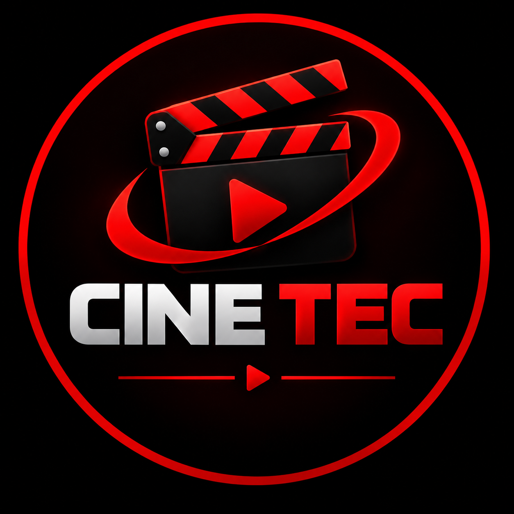

HTML
Organiza a estrutura e o conteúdo das páginas.

Seu portal de trailers, grandes histórias e novidades do cinema.
🍿 VER FILME EM DESTAQUEQuatro anos depois dos acontecimentos de Homem-Aranha: Sem Volta para Casa, Peter Parker vive sozinho e as pessoas que ama já não se lembram dele. Agora, ele se dedica em tempo integral a proteger Nova York como Homem-Aranha.
Enquanto a pressão de salvar a cidade aumenta, Peter começa a passar por uma surpreendente transformação física. Ao mesmo tempo, uma onda de crimes estranhos anuncia uma ameaça inédita, capaz de colocar em risco tudo o que ele tenta proteger.
O filme traz uma nova fase para o herói, misturando ação, desafios pessoais e o peso de seguir em frente quando o mundo esqueceu quem você é.
O CineTec é um portal de cinema criado para reunir trailers e destacar filmes em uma experiência visual inspirada nas plataformas de entretenimento.
Organiza a estrutura e o conteúdo das páginas.
Cuida das cores, animações, layout e adaptação para diferentes telas.
Adiciona a busca de trailers e interações à experiência.
Projeto educacional desenvolvido para explorar criação de sites e tecnologias web.